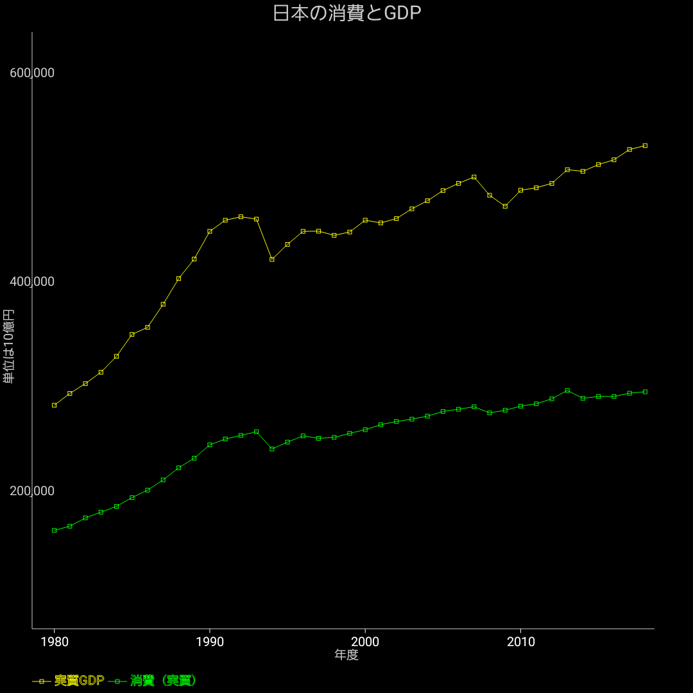

日本の消費とGDP

日本の消費とGDPをプロットした物です。
1980年から現在まで。
GDPのうち消費の占める割合が確認出来ます。
消費の比率が多いという事はだいたいは投資の割合が少ないという事であり、将来に対する備えが不十分である可能性がある。
また逆に消費の比率が低すぎると、投資の比率が多すぎて、不採算な所に投資を行っている危険性が出てくる（バブルや過大な公共事業など）。
GDPの伸び方に比べると消費の伸び方はそれ程でも無い事が確認出来ます。国民が享受している豊かさとは、長期的には消費で決まると思われるので、GDPで見る程には豊かになっていないように見えます。
また、GDPに比べると消費は安定しているのが見て取れます。消費の比率の低い経済は景気の変動が激しい事が予想されます。